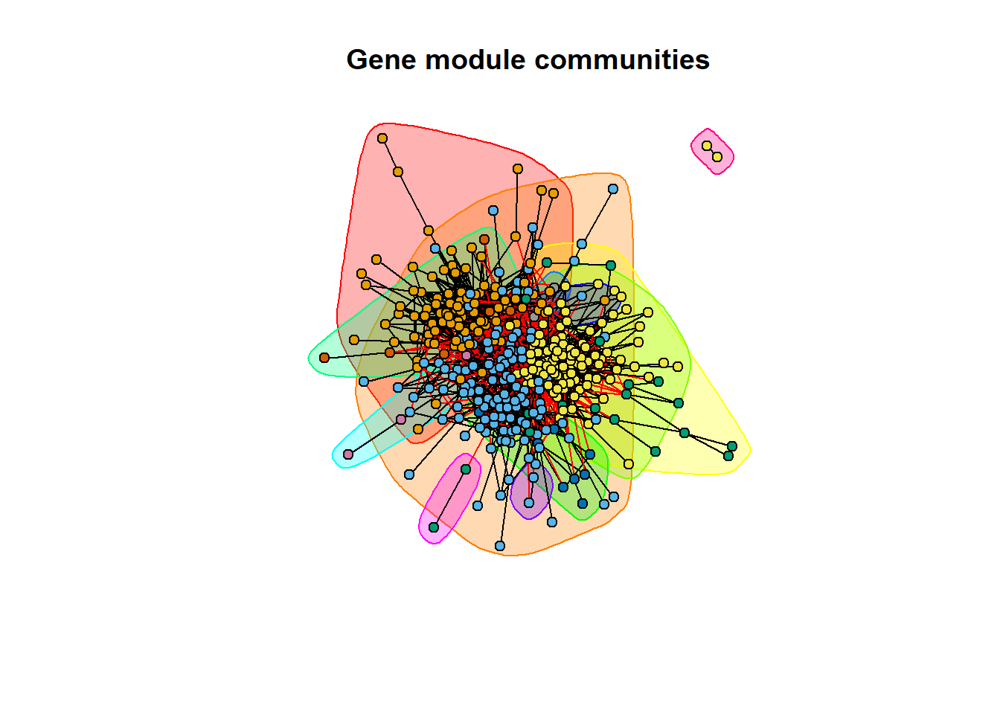

Last updated: 2025-04-03
Checks: 6 1
Knit directory: deep_motifs/
This reproducible R Markdown analysis was created with workflowr (version 1.7.1). The Checks tab describes the reproducibility checks that were applied when the results were created. The Past versions tab lists the development history.
The R Markdown file has unstaged changes. To know which version of
the R Markdown file created these results, you’ll want to first commit
it to the Git repo. If you’re still working on the analysis, you can
ignore this warning. When you’re finished, you can run
wflow_publish to commit the R Markdown file and build the
HTML.
Great job! The global environment was empty. Objects defined in the global environment can affect the analysis in your R Markdown file in unknown ways. For reproduciblity it’s best to always run the code in an empty environment.
The command set.seed(20230928) was run prior to running
the code in the R Markdown file. Setting a seed ensures that any results
that rely on randomness, e.g. subsampling or permutations, are
reproducible.
Great job! Recording the operating system, R version, and package versions is critical for reproducibility.
Nice! There were no cached chunks for this analysis, so you can be confident that you successfully produced the results during this run.
Great job! Using relative paths to the files within your workflowr project makes it easier to run your code on other machines.
Great! You are using Git for version control. Tracking code development and connecting the code version to the results is critical for reproducibility.
The results in this page were generated with repository version 9081803. See the Past versions tab to see a history of the changes made to the R Markdown and HTML files.
Note that you need to be careful to ensure that all relevant files for
the analysis have been committed to Git prior to generating the results
(you can use wflow_publish or
wflow_git_commit). workflowr only checks the R Markdown
file, but you know if there are other scripts or data files that it
depends on. Below is the status of the Git repository when the results
were generated:
Untracked files:
Untracked: VennDiagram.2025-04-03_10-07-40.627823.log
Untracked: VennDiagram.2025-04-03_10-11-47.561581.log
Unstaged changes:
Modified: analysis/part01_score_dist.Rmd
Modified: analysis/part04_clustering_analysis.Rmd
Note that any generated files, e.g. HTML, png, CSS, etc., are not included in this status report because it is ok for generated content to have uncommitted changes.
These are the previous versions of the repository in which changes were
made to the R Markdown
(analysis/part04_clustering_analysis.Rmd) and HTML
(docs/part04_clustering_analysis.html) files. If you’ve
configured a remote Git repository (see ?wflow_git_remote),
click on the hyperlinks in the table below to view the files as they
were in that past version.
| File | Version | Author | Date | Message |
|---|---|---|---|---|
| Rmd | 92c7f1d | han | 2025-03-31 | 3/31/2025 |
| html | 92c7f1d | han | 2025-03-31 | 3/31/2025 |
rm(list=ls())
set.seed(123)
library(tidyverse)
library(ggplot2)
library(DT)
library(VennDiagram)
library(rprojroot)
library(biomaRt)
library(igraph)
root <- rprojroot::find_rstudio_root_file()#result_round1=as_tibble(read.csv(file.path(root, "../DiWangResults/ASD_prediction_results/ASD_RISK_PREDICTION_round1.csv"))) # old results
result_round1=as_tibble(read.csv(file.path(root, "../DiWangResults/results updated_20250303/ASD_RISK_PREDICTION round 1.csv")))
result_round1=result_round1[result_round1['gene'] != 0,] # remove rows with gene=0score_cutoff=0.5
top_genes=result_round1 %>% filter(RISK_PROBABILITY_FUSION>score_cutoff) %>% dplyr::select(gene_gencodeV33) %>% pull
#library(biomaRt)
ensembl <- useMart("ensembl", dataset = "hsapiens_gene_ensembl", host = "https://grch37.ensembl.org")
# Define function to split queries
query_genes_in_batches <- function(genes, batch_size = 50) {
results <- list()
for (i in seq(1, length(genes), by = batch_size)) {
batch <- genes[i:min(i + batch_size - 1, length(genes))]
cat("Querying batch:", i, "to", min(i + batch_size - 1, length(genes)), "\n")
batch_result <- tryCatch({
getBM(attributes = c("hgnc_symbol", "ensembl_gene_id", "ensembl_peptide_id"),
filters = "hgnc_symbol",
values = batch,
mart = ensembl)
}, error = function(e) {
cat("Error in batch query:", e$message, "\n")
return(NULL)
})
results <- append(results, list(batch_result))
}
return(do.call(rbind, results))
}
# Run the batch query
top_genes_info <- query_genes_in_batches(top_genes, batch_size = 1000)Querying batch: 1 to 447 #write.csv(jack_fu_gene_info, file="C:\\Users\\hans\\OneDrive - Marquette University\\AI_for_Autism\\jack_fu_gene_info.csv")
############# load string protein interaction data
load("C:\\han\\Projects\\IntegratePPI\\tmp01_STRING_graph.Rdata") # this is the protein interaction with score>400
protein1_gene <- top_genes_info$hgnc_symbol[match(string.keep$protein1, top_genes_info$ensembl_peptide_id)]
protein2_gene <- top_genes_info$hgnc_symbol[match(string.keep$protein2, top_genes_info$ensembl_peptide_id)]
top_genes_interaction=data.frame(protein1_gene, protein2_gene) %>% drop_na() # string interactions for top genes
#library(igraph)
# Create the graph from the edge list (gene interactions)
g <- graph_from_data_frame(top_genes_interaction, directed = FALSE)
# Simplify the graph by removing multi-edges and loops (if any)
g <- simplify(g, remove.multiple = TRUE, remove.loops = TRUE)
# Compute community structure
fg_community <- fastgreedy.community(g)
# Print community structure
print(fg_community)IGRAPH clustering fast greedy, groups: 12, mod: 0.43
+ groups:
$`1`
[1] "SYT13" "SLC17A7" "LRRC4" "GFAP" "SYT1" "CUX2"
[7] "NDST1" "NOVA2" "DGKD" "PCDH10" "NRXN2" "DOCK3"
[13] "SLIT1" "CACNA1C" "GABRB2" "LRRC4C" "ANK3" "FEZF2"
[19] "NPTN" "GRIA2" "ADCY1" "SCN1A" "TWF2" "NLGN2"
[25] "ZNF608" "GABRB3" "ALDH5A1" "KCNH7" "GRIN2A" "PCLO"
[31] "FOXG1" "NEO1" "PPP1CC" "AUTS2" "SHANK2" "CASKIN1"
[37] "SCN8A" "LINGO1" "ZNF536" "AKAP9" "SPTBN1" "ANK2"
[43] "KCNQ2" "ELAVL3" "ATP2B2" "DNAJC5" "CYB5R3" "CACNA1E"
[49] "ATP1B1" "GRIN1" "KCNB1" "POMGNT1" "GRIK3" "STXBP1"
+ ... omitted several groups/vertices# Get membership (which community each gene belongs to)
#membership(fg_community)
# Plot the network with communities
plot(fg_community, g, vertex.size = 5, vertex.label = NA, main = "Gene module communities")
| Version | Author | Date |
|---|---|---|
| 92c7f1d | han | 2025-03-31 |
# Extract the membership of each vertex
membership_vector <- membership(fg_community)
# Print the membership of each vertex
print(membership_vector) PPP5C SYT13 GRN KDM4B CDK13 ITGB4 KLHL20 EIF3D
2 1 2 4 4 6 2 2
SOS2 PSMA3 PNN CSNK2A1 TSC2 MAZ SLC17A7 EDF1
2 2 2 4 2 3 1 2
CPD HDAC5 USP5 NUP155 TRIM23 PAPOLG TARDBP TSHZ3
10 4 2 5 2 2 2 4
KATNAL2 MBOAT7 VGF LRRC4 ZC3H14 TAF4 EIF3G GFAP
2 2 4 1 2 4 2 1
FUS KDM6B TERF2 ARF3 KIDINS220 PPIG SYT1 MIB1
2 4 2 2 2 2 1 3
PSMD11 TAOK1 CUX2 NDST1 PHF3 KMT2C YY1 CREBBP
2 2 1 1 4 4 4 4
SRCAP SETD1A RAB2A RALGAPB ATRN EP300 NOVA2 BRD4
4 4 2 4 4 4 1 4
CLASP1 KIF1B PIK3CA EHBP1 DGKD PCDH10 CUL3 RBBP5
6 2 2 7 1 1 2 4
HDAC4 DNMT3A KIF3C TNPO3 NRXN2 KAT6A BRINP1 DOCK3
4 4 2 5 1 4 5 1
SLIT1 CACNA1C ASXL3 CBX4 PRDM15 HUNK DMWD LMTK3
1 1 4 4 3 3 11 3
POGZ GABRB2 PHIP GIGYF1 FAM120A ZNF462 LRRC4C ARID5B
4 1 3 2 2 4 1 4
SEC24D ANK3 DIP2C MED13L NIPBL FEZF2 SCAF4 NPTN
2 1 5 4 4 1 3 1
UBR1 NACC1 WDFY3 GRIA2 NAA15 ABCE1 TCERG1 ADCY1
3 3 4 1 5 2 2 1
NFIL3 TSC1 LEO1 MAP1A ANKRD11 DDB1 HNRNPUL2 CXXC5
8 2 4 2 4 2 2 4
SCN1A TWF2 KIAA0232 NLGN2 YWHAG BPTF ZNF608 GABRB3
1 1 2 1 2 4 1 1
ZBTB21 RPL15 KLF7 SP3 ARHGAP32 MSL2 KMT2E MLXIP
3 2 4 2 7 4 4 2
HNRNPD ALDH5A1 DVL3 PACS1 TLK2 SNRNP200 FUBP3 MRFAP1
2 1 2 10 2 2 2 4
TRAF7 ARID1A SPAST ZMYM4 RAI1 SMARCE1 YLPM1 GSK3B
3 4 4 3 4 4 2 2
KDM3B PHF12 C16orf72 KCNH7 GRIN2A KLHDC10 PCLO ZMIZ1
4 4 2 1 1 2 1 4
TNRC6C TESK1 PUM2 RERE FOXG1 TRIO CAPRIN1 DYRK1A
4 2 2 4 1 2 2 2
TRIM24 MEF2C NEO1 PPP1CC DYRK2 BAZ1B SMARCA4 AUTS2
2 4 1 1 2 4 4 1
NR4A2 SHANK2 CPSF7 CASKIN1 DMPK SCN8A WAC LINGO1
8 1 2 1 11 1 5 1
DHCR7 ZNF536 MBD6 PSMD12 AKAP9 DYNC1H1 SON SPTBN1
12 1 9 2 1 2 2 1
ANK2 SFPQ BRPF3 NR3C2 PAX5 NF1 CNOT3 PLXNB1
1 2 4 2 4 2 2 2
VPS13B ZBTB18 SMARCAD1 KCNQ2 ELAVL3 PHF2 PLXNB2 TCF20
4 4 4 1 1 4 2 4
PTPRF ATP2B2 MYH10 SCAF1 DNAJC5 EIF3B NCKAP1 CYB5R3
2 1 2 3 1 2 7 1
MTOR MACF1 DLL1 PLXNA2 KDM5B CACNA1E HIVEP2 ATP1B1
2 6 3 2 4 1 4 1
DEDD RNF146 RUSC1 EBF3 GATAD2B ZNF292 SYNCRIP GRIN1
2 2 12 4 4 4 2 1
ADNP KCNB1 PTEN POMGNT1 TSPAN14 KDM4A GRIK3 AGO4
4 1 2 1 2 4 1 4
CHD6 STXBP1 DLGAP4 AHDC1 RBM12 SPEN RORB KDM2B
4 1 1 4 5 4 1 4
SPRY2 HECTD4 DPP6 AHNAK EXT1 SKI ARIH1 TEK
2 1 1 1 1 4 2 2
ELAVL2 CHD3 PTPRD ITSN1 ZMYND11 RFX3 BRSK2 SMARCA2
2 4 1 2 4 1 2 4
DEAF1 SRGAP3 KCNQ3 TRIP12 CAMSAP1 TBR1 RTF1 HDLBP
2 1 1 4 2 1 4 2
ASH1L BAZ2B CBX1 PLXNA1 GAPVD1 G3BP1 CHD2 SIN3A
4 4 4 2 2 2 4 4
BCKDK QRICH1 ATXN2L CAMK2B THRB CSNK1E NFIX MED13
2 2 2 1 4 2 1 4
ARHGEF12 NAV3 TCF4 CTNND1 MYO5A HECTD1 EIF4G3 DSCAM
2 1 4 2 2 3 2 1
CECR2 CADM2 INO80D MTMR3 FBXO11 PSD NRXN1 NCOA1
4 1 4 2 2 6 1 4
MARK2 SETD5 MBD5 FOXP2 SETD2 GIGYF2 KANSL1 TANC2
1 4 9 1 4 2 4 1
UBAP2L PUM1 CHD7 DIP2A EFTUD2 RELN KIF5C BIRC6
2 2 4 5 2 1 2 3
PRR12 NSD1 GRIK2 SOX5 PHF21A KLC2 TNIK SATB1
3 4 1 1 4 2 6 1
SATB2 TNRC6B RUNX1T1 SMG1 AP2M1 ILF3 TBL1XR1 PBX1
1 4 4 2 1 2 4 4
HRAS CELF4 CAMTA2 ANP32A PPP2R5D EHMT1 PSMD6 PTK7
2 1 1 1 2 4 2 2
BRAF CACNA2D3 ZBTB20 SMG7 EIF4E DPYSL2 RIMS1 SEC24B
2 1 4 2 2 1 1 2
UBR5 UNC13A ASAP1 KMT2A MYO18A ZMYND8 APC2 MYCBP2
2 1 6 4 2 4 2 3
ATP1A3 CNTN1 AGAP2 SMARCC2 TLE3 MEIS2 SCAPER ZNF423
1 1 1 4 4 4 7 4
ZNF865 VEZF1 TSHZ1 AP2S1 SETD1B APBB1 GRIN2B
3 2 4 1 4 4 1 # Group the vertices by community
communities <- split(V(g)$name, membership_vector)
# Print each community and its members
for (i in seq_along(communities)) {
cat("Community", i, ":", communities[[i]], "\n")
}Community 1 : SYT13 SLC17A7 LRRC4 GFAP SYT1 CUX2 NDST1 NOVA2 DGKD PCDH10 NRXN2 DOCK3 SLIT1 CACNA1C GABRB2 LRRC4C ANK3 FEZF2 NPTN GRIA2 ADCY1 SCN1A TWF2 NLGN2 ZNF608 GABRB3 ALDH5A1 KCNH7 GRIN2A PCLO FOXG1 NEO1 PPP1CC AUTS2 SHANK2 CASKIN1 SCN8A LINGO1 ZNF536 AKAP9 SPTBN1 ANK2 KCNQ2 ELAVL3 ATP2B2 DNAJC5 CYB5R3 CACNA1E ATP1B1 GRIN1 KCNB1 POMGNT1 GRIK3 STXBP1 DLGAP4 RORB HECTD4 DPP6 AHNAK EXT1 PTPRD RFX3 SRGAP3 KCNQ3 TBR1 CAMK2B NFIX NAV3 DSCAM CADM2 NRXN1 MARK2 FOXP2 TANC2 RELN GRIK2 SOX5 SATB1 SATB2 AP2M1 CELF4 CAMTA2 ANP32A CACNA2D3 DPYSL2 RIMS1 UNC13A ATP1A3 CNTN1 AGAP2 AP2S1 GRIN2B
Community 2 : PPP5C GRN KLHL20 EIF3D SOS2 PSMA3 PNN TSC2 EDF1 USP5 TRIM23 PAPOLG TARDBP KATNAL2 MBOAT7 ZC3H14 EIF3G FUS TERF2 ARF3 KIDINS220 PPIG PSMD11 TAOK1 RAB2A KIF1B PIK3CA CUL3 KIF3C GIGYF1 FAM120A SEC24D ABCE1 TCERG1 TSC1 MAP1A DDB1 HNRNPUL2 KIAA0232 YWHAG RPL15 SP3 MLXIP HNRNPD DVL3 TLK2 SNRNP200 FUBP3 YLPM1 GSK3B C16orf72 KLHDC10 TESK1 PUM2 TRIO CAPRIN1 DYRK1A TRIM24 DYRK2 CPSF7 PSMD12 DYNC1H1 SON SFPQ NR3C2 NF1 CNOT3 PLXNB1 PLXNB2 PTPRF MYH10 EIF3B MTOR PLXNA2 DEDD RNF146 SYNCRIP PTEN TSPAN14 SPRY2 ARIH1 TEK ELAVL2 ITSN1 BRSK2 DEAF1 CAMSAP1 HDLBP PLXNA1 GAPVD1 G3BP1 BCKDK QRICH1 ATXN2L CSNK1E ARHGEF12 CTNND1 MYO5A EIF4G3 MTMR3 FBXO11 GIGYF2 UBAP2L PUM1 EFTUD2 KIF5C KLC2 SMG1 ILF3 HRAS PPP2R5D PSMD6 PTK7 BRAF SMG7 EIF4E SEC24B UBR5 MYO18A APC2 VEZF1
Community 3 : MAZ MIB1 PRDM15 HUNK LMTK3 PHIP SCAF4 UBR1 NACC1 ZBTB21 TRAF7 ZMYM4 SCAF1 DLL1 HECTD1 BIRC6 PRR12 MYCBP2 ZNF865
Community 4 : KDM4B CDK13 CSNK2A1 HDAC5 TSHZ3 VGF TAF4 KDM6B PHF3 KMT2C YY1 CREBBP SRCAP SETD1A RALGAPB ATRN EP300 BRD4 RBBP5 HDAC4 DNMT3A KAT6A ASXL3 CBX4 POGZ ZNF462 ARID5B MED13L NIPBL WDFY3 LEO1 ANKRD11 CXXC5 BPTF KLF7 MSL2 KMT2E MRFAP1 ARID1A SPAST RAI1 SMARCE1 KDM3B PHF12 ZMIZ1 TNRC6C RERE MEF2C BAZ1B SMARCA4 BRPF3 PAX5 VPS13B ZBTB18 SMARCAD1 PHF2 TCF20 KDM5B HIVEP2 EBF3 GATAD2B ZNF292 ADNP KDM4A AGO4 CHD6 AHDC1 SPEN KDM2B SKI CHD3 ZMYND11 SMARCA2 TRIP12 RTF1 ASH1L BAZ2B CBX1 CHD2 SIN3A THRB MED13 TCF4 CECR2 INO80D NCOA1 SETD5 SETD2 KANSL1 CHD7 NSD1 PHF21A TNRC6B RUNX1T1 TBL1XR1 PBX1 EHMT1 ZBTB20 KMT2A ZMYND8 SMARCC2 TLE3 MEIS2 ZNF423 TSHZ1 SETD1B APBB1
Community 5 : NUP155 TNPO3 BRINP1 DIP2C NAA15 WAC RBM12 DIP2A
Community 6 : ITGB4 CLASP1 MACF1 PSD TNIK ASAP1
Community 7 : EHBP1 ARHGAP32 NCKAP1 SCAPER
Community 8 : NFIL3 NR4A2
Community 9 : MBD6 MBD5
Community 10 : CPD PACS1
Community 11 : DMWD DMPK
Community 12 : DHCR7 RUSC1
sessionInfo()R version 4.4.0 (2024-04-24 ucrt)
Platform: x86_64-w64-mingw32/x64
Running under: Windows 10 x64 (build 19045)
Matrix products: default
locale:
[1] LC_COLLATE=English_United States.utf8
[2] LC_CTYPE=English_United States.utf8
[3] LC_MONETARY=English_United States.utf8
[4] LC_NUMERIC=C
[5] LC_TIME=English_United States.utf8
time zone: America/Chicago
tzcode source: internal
attached base packages:
[1] grid stats graphics grDevices utils datasets methods
[8] base
other attached packages:
[1] igraph_2.0.3 biomaRt_2.60.1 rprojroot_2.0.4
[4] VennDiagram_1.7.3 futile.logger_1.4.3 DT_0.33
[7] lubridate_1.9.3 forcats_1.0.0 stringr_1.5.1
[10] dplyr_1.1.4 purrr_1.0.2 readr_2.1.5
[13] tidyr_1.3.1 tibble_3.2.1 ggplot2_3.5.1
[16] tidyverse_2.0.0
loaded via a namespace (and not attached):
[1] tidyselect_1.2.1 blob_1.2.4 filelock_1.0.3
[4] Biostrings_2.72.0 fastmap_1.1.1 BiocFileCache_2.12.0
[7] promises_1.3.0 digest_0.6.35 timechange_0.3.0
[10] lifecycle_1.0.4 KEGGREST_1.44.0 RSQLite_2.3.6
[13] magrittr_2.0.3 compiler_4.4.0 rlang_1.1.3
[16] sass_0.4.9 progress_1.2.3 tools_4.4.0
[19] utf8_1.2.4 yaml_2.3.8 knitr_1.46
[22] lambda.r_1.2.4 prettyunits_1.2.0 htmlwidgets_1.6.4
[25] curl_5.2.1 bit_4.0.5 xml2_1.3.6
[28] workflowr_1.7.1 withr_3.0.0 BiocGenerics_0.50.0
[31] stats4_4.4.0 fansi_1.0.6 git2r_0.33.0
[34] colorspace_2.1-0 scales_1.3.0 cli_3.6.2
[37] rmarkdown_2.26 crayon_1.5.2 generics_0.1.3
[40] rstudioapi_0.16.0 httr_1.4.7 tzdb_0.4.0
[43] DBI_1.2.3 cachem_1.0.8 zlibbioc_1.50.0
[46] AnnotationDbi_1.66.0 formatR_1.14 XVector_0.44.0
[49] vctrs_0.6.5 jsonlite_1.8.8 IRanges_2.38.0
[52] hms_1.1.3 S4Vectors_0.42.0 bit64_4.0.5
[55] jquerylib_0.1.4 glue_1.7.0 stringi_1.8.4
[58] gtable_0.3.5 later_1.3.2 GenomeInfoDb_1.40.0
[61] UCSC.utils_1.0.0 munsell_0.5.1 pillar_1.9.0
[64] rappdirs_0.3.3 htmltools_0.5.8.1 GenomeInfoDbData_1.2.12
[67] dbplyr_2.5.0 R6_2.5.1 httr2_1.0.1
[70] evaluate_0.23 Biobase_2.64.0 highr_0.10
[73] futile.options_1.0.1 png_0.1-8 memoise_2.0.1
[76] httpuv_1.6.15 bslib_0.7.0 Rcpp_1.0.12
[79] whisker_0.4.1 xfun_0.43 fs_1.6.4
[82] pkgconfig_2.0.3